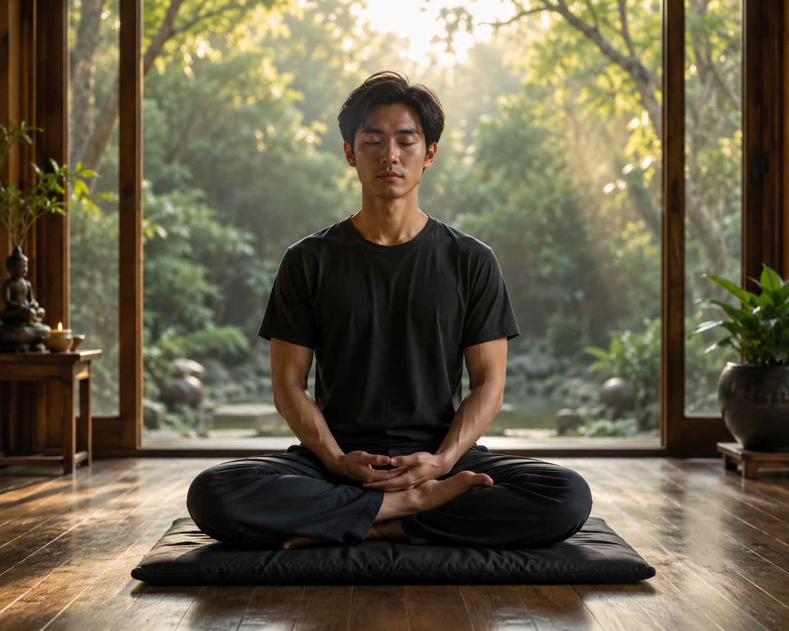
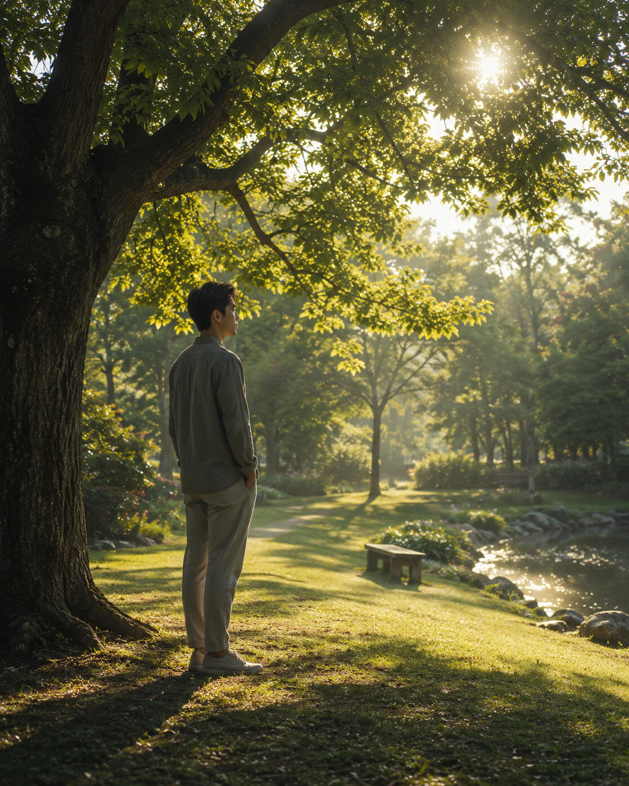

This website is about learning to become calm, steady, and aware while still living your everyday life.
Meditation isn't about escaping life. It's about becoming harder for life to pull you around.
I created this site to share what I've learned through my own experience and to offer a simple path for anyone who wants to develop greater calmness, awareness, and control over their thoughts and reactions.
This website's intention is to share the experiences I have personally encountered during my meditation journey. I would like to share what I have learned and experienced, with the hope that it may also help you on your own journey through life.
Best regards,
Charlie Robert
Calmness creates the foundation for everything that follows.
Steadyness is learning to remain in the space created by calmness.
Pure consciousness is not an empty mind. It is freedom from unnecessary mental activity.
Elevated consciousness is the freedom to experience life without being controlled by every thought, emotion or impulse.
Meditation is a gradual journey from calmness to awareness, detachment and freedom.
A brief overview of the journey from calmness to greater awareness and freedom in everyday life.
The journey begins with calmness and develops through steadiness, awareness, and detachment.
Pure Awareness develops into Elevated Consciousness, where awareness becomes part of how you experience and respond to everyday life.
The purpose is not to escape being human, but to become increasingly free to choose how you respond to life.
Calmness → Steadyness → Awareness → Detachment → Pure Awareness → Elevated Consciousness
This is the journey.
If this has had a positive impact on you, your support helps me continue developing and sharing these ideas with others.
Support / Donate
This is the state that you carry into your everyday life.
This is how you experience and respond to life.
I truly hope that I have given you the tools and understanding to have a different take on viewing the world and life. The best of luck to you.
The Life is where becoming starts to change how you live.
You are still a normal human being.
You can smile, laugh, joke with your friends, enjoy yourself, become excited, feel frustrated and experience all the normal emotions of life. The difference is that there is a steady awareness underneath it all.
Once you learn to keep that awareness on, it can become almost automatic.
It is like having an internal monitor that recognizes what is happening within you.
Thoughts, impulses and emotions can be noticed as they begin to arise. When something is likely to lead to an unwanted result, you can recognize it before automatically following it.
You don't have to constantly analyze yourself.
The awareness simply remains present.
Because of this, many problems can become easier to manage. Instead of reacting first and dealing with the consequences afterward, you can recognize what is happening while it is still developing.
A situation happens.
You notice your response.
You recognize what is happening within you.
Then you decide what to do.
This doesn't mean that every emotion needs to be stopped. Emotions are part of being human. The point is being able to recognize when an emotion, impulse or thought is taking you somewhere you don't actually want to go.
Over time, this constant self-awareness can also make problem-solving more natural.
You are constantly receiving information about yourself while you are dealing with the world around you. You can recognize mistakes earlier, notice patterns, and adjust your actions before things become more complicated.
The result isn't a life without problems.
It is a person who is better prepared to handle them.
You become steadier at the core while remaining completely human on the outside.
You can live naturally because the awareness isn't there to control your life.
It is there to help you live it.
Becoming is the process of developing this awareness until it becomes a natural part of how you live.
Meditation is often presented as a way to relax, escape from stress, or find temporary peace.
I see it differently.
Meditation is a process of learning how the mind works, learning to recognize what is happening within it, and gradually developing the ability to remain steady rather than being controlled by every thought, emotion, impulse, or situation.
The process begins with calmness.
When the mind becomes calmer, there is a little more space between what happens and how we automatically react to it. Within that space, awareness becomes clearer.
From awareness comes steadiness — the ability to remain present without immediately following every thought or emotion that appears.
As this develops, we begin to understand detachment. We can experience thoughts, emotions, people, possessions, success, failure, and the events of everyday life without needing to be completely carried away by them.
This creates a different way of experiencing life.
The goal is not to become disconnected from the world. It is not to escape life or stop having thoughts and emotions.
It is to become less controlled by them.
The journey described on this website begins with simple meditation and gradually moves toward deeper awareness and a greater understanding of consciousness.
Everything here is based on my own experience and understanding. I do not present it as an absolute truth. My intention is simply to share what I have learned and to give others something they can explore for themselves.
Don't escape life. Become less controlled by the world around you.
This website is not teaching a religion. Meditation can be practiced within many different religions. The ideas are based primarily on personal experience, meditation, awareness, and observation of the mind.
You don't need years of meditation experience. The earlier stages are about things everyone experiences: thoughts, emotions, reactions and impulses. You can begin simply by noticing what happens in your own mind. Some deeper experiences may take time and practice to understand, but you do not need to be an advanced meditator to begin the journey.
No. You can still feel happiness, sadness, excitement, frustration and love. Detachment isn't about removing emotions. It's about experiencing them without automatically being carried away by them.
For me, it became almost the opposite. The purpose isn't to escape life, but to experience it with greater clarity.
You are still yourself. Your preferences, humor, interests and individuality remain. What can change is your relationship with your thoughts, emotions and reactions.
You don't necessarily feel like you're meditating all the time. Awareness can simply become part of how you live. You notice what is happening and have more freedom in deciding what to do with it.
You don't have to stop your thoughts. Thoughts are a natural part of being human. The practice is learning to notice them without automatically following them. Over time, the mind can become quieter, but the goal isn't to force it into silence.
The changes may not always be obvious while you are meditating. You may notice them later in everyday life — in the way you respond to situations, how quickly you become caught up in emotions, or how easily you return to a steady state. For me, the real measure is what begins to develop outside of meditation.
Yes. At least, that is what I have experienced. Meditation can begin as something you do while sitting quietly, but the awareness developed through it can gradually become part of how you live. You are still the same person, living the same life, but you may begin to experience yourself and the world around you differently.
I observed what was happening in my own mind rather than starting with a fixed belief system. I began noticing patterns in thoughts, emotions, impulses and awareness. Over time, I connected these observations and developed my own framework for understanding them.
If you would like to explore these ideas further, I have also written several books that continue the exploration of awareness, stillness, and consciousness.
How Awareness Stabilizes the Mind in a Reactive World
An exploration of how awareness can create space between what happens within us and how we respond, allowing greater clarity and steadiness in everyday life.
Understanding the Layers of the Mind, Stillness, and Human Clarity
A deeper exploration of awareness, stillness, and the different layers through which we experience the mind and ourselves.
The Layer Beyond Thought
An exploration of what may become possible when awareness is no longer limited to following thoughts, allowing a quieter and more direct relationship with experience.
If something you have read here has helped you, given you a different perspective, or encouraged you to explore your own awareness, you are welcome to support this work.
If you find my work helpful, your support is greatly appreciated.
KasikornBank
Account Name: ชาลี โรเบิร์ต
Account Number: 0621173138
Thank you for supporting my work.
จุดมุ่งหมายของการทำสมาธิในแบบที่ผมเข้าใจ คือการทำจิตใจให้สงบ
เมื่อจิตใจเต็มไปด้วยความคิด อารมณ์ ความกังวล และความต้องการ เราอาจมองสิ่งต่าง ๆ ได้ไม่ชัดเจนนัก บางครั้งเราตอบสนองต่อสิ่งที่เกิดขึ้นก่อนที่จะเข้าใจ ตัดสินบางสิ่งก่อนที่จะพิจารณาให้ดี หรือปล่อยให้อารมณ์มีอิทธิพลต่อการมองโลกของเรา
การทำสมาธิเปิดโอกาสให้จิตใจได้กลับมาสงบ เราไม่จำเป็นต้องบังคับให้ความคิดหายไป หรือพยายามทำให้ตัวเองไปถึงสภาวะพิเศษใด ๆ เพียงปล่อยให้จิตใจค่อย ๆ นิ่งลง
จากความสงบนี้ สิ่งสำคัญอย่างหนึ่งก็เริ่มเกิดขึ้นได้ นั่นคือ การมองเห็นและพิจารณาโลกที่อยู่รอบตัว รวมถึงทำความเข้าใจตัวเราเองได้ชัดเจนยิ่งขึ้น
เราสามารถสังเกตความคิดโดยไม่จำเป็นต้องทำตามทุกความคิด รับรู้อารมณ์โดยไม่ปล่อยให้อารมณ์เป็นผู้กำหนดการกระทำ และเริ่มเข้าใจว่าเหตุใดเราจึงตอบสนองต่อสิ่งต่าง ๆ ในบางรูปแบบ เหตุใดเราจึงเกิดความยึดติด และจิตใจของเรามีส่วนกำหนดประสบการณ์ชีวิตอย่างไร
ดังนั้น ความสงบจึงไม่ใช่จุดสิ้นสุดของการเดินทาง แต่เป็นพื้นฐานที่ช่วยให้เราเรียนรู้ที่จะมองเห็นสิ่งต่าง ๆ ได้ชัดเจนขึ้น และเข้าใจตนเองได้ลึกซึ้งยิ่งขึ้น
การทำสมาธิไม่ใช่การหลีกหนีชีวิต แต่เป็นการทำใจให้สงบพอที่จะเข้าใจชีวิต — และเข้าใจตัวเราเอง — ได้ชัดเจนยิ่งขึ้น
เมื่อเราสามารถทำจิตใจให้เกิดความสงบและมีความมั่นคงได้ เราจะค่อย ๆ เข้าสู่สภาวะของจิตที่เอื้อต่อการทำสมาธิอย่างเต็มที่
ภายในสภาวะนี้ ความคิดและอารมณ์ที่เกิดขึ้นจากการทำงานของสมองและร่างกาย จะสามารถถูกรับรู้ได้ชัดเจนขึ้น เราอาจสังเกตเห็นความคิดแต่ละอย่างที่เกิดขึ้น การเปลี่ยนแปลงของอารมณ์ หรือความรู้สึกทางกายที่เกิดร่วมกัน โดยไม่ถูกรบกวนจากความคิดที่ต่อเนื่องกันมากเกินไป
ตามปกติ เมื่อความคิดหนึ่งเกิดขึ้น เราอาจเผลอติดตามมันไปจนเกิดความคิดอื่นต่อเนื่องกัน หรือเมื่ออารมณ์เกิดขึ้น เราอาจถูกอารมณ์นั้นดึงเข้าสู่การตอบสนอง โดยไม่ทันสังเกตกระบวนการที่เกิดขึ้นภายในตัวเรา
แต่เมื่อจิตใจสงบและมีความมั่นคงมากขึ้น เราจะมีโอกาสรับรู้กระบวนการเหล่านี้ได้ละเอียดขึ้น สามารถสังเกตสิ่งที่เกิดขึ้นภายในจิตใจได้ โดยไม่จำเป็นต้องเข้าไปมีส่วนร่วมกับทุกความคิดหรือทุกอารมณ์ที่ปรากฏขึ้น
การฝึกสมาธิจึงไม่ใช่เพียงการทำจิตใจให้สงบในช่วงเวลาที่นั่งสมาธิเท่านั้น แต่ยังเป็นการฝึกให้จิตใจคุ้นเคยกับสภาวะที่เอื้อต่อการรับรู้ตนเองอย่างชัดเจน
เมื่อฝึกฝนอย่างเพียงพอ เราอาจสามารถกลับเข้าสู่สภาวะที่สงบและมั่นคงนี้ได้ง่ายขึ้น และการรับรู้ความคิด อารมณ์ รวมถึงการเปลี่ยนแปลงภายในตัวเอง ก็อาจเกิดขึ้นได้อย่างเป็นธรรมชาติมากขึ้น โดยไม่ต้องใช้ความพยายามมากเหมือนในช่วงเริ่มต้น
นี่คือพื้นฐานของการทำความเข้าใจความคิดและอารมณ์ของตนเอง ผ่านการฝึกสมาธิอย่างต่อเนื่อง
เมื่อเราฝึกสมาธิอย่างต่อเนื่อง เราไม่ได้ฝึกเพียงการทำจิตใจให้สงบในช่วงเวลาที่นั่งสมาธิเท่านั้น แต่เรายังฝึกให้จิตใจคุ้นเคยกับสภาวะของความสงบ ความมั่นคง และการรับรู้สิ่งที่เกิดขึ้นภายในตนเอง
ในช่วงเริ่มต้น เราอาจต้องใช้ความตั้งใจในการกลับมารับรู้ความคิดและอารมณ์อยู่บ่อยครั้ง แต่เมื่อฝึกฝนมากขึ้น การรับรู้นี้อาจเกิดขึ้นได้อย่างเป็นธรรมชาติมากขึ้น โดยไม่ต้องพยายามดึงความสนใจกลับมาทุกครั้งเหมือนในช่วงแรก
เมื่อความสามารถในการรับรู้พัฒนาขึ้น เราอาจสังเกตเห็นความเปลี่ยนแปลงภายในจิตใจได้ตั้งแต่ระยะแรก เช่น ความหงุดหงิดที่เริ่มก่อตัว ความต้องการที่จะตอบโต้ หรือแรงกระตุ้นที่ทำให้เราอยากทำบางสิ่งทันที
สิ่งสำคัญคือ เราไม่จำเป็นต้องรอให้แรงกระตุ้นนั้นกลายเป็นการกระทำก่อนจึงจะรู้ตัว การฝึกสมาธิอาจช่วยให้เรารับรู้สิ่งที่เกิดขึ้นได้เร็วขึ้น จนการรับรู้กลายเป็นส่วนหนึ่งของการตอบสนองตามธรรมชาติ
ในชีวิตประจำวัน แรงกระตุ้นบางอย่างเกิดขึ้นอย่างรวดเร็ว ก่อนที่เราจะมีเวลาพิจารณาอย่างเต็มที่ เช่น ความโกรธที่ทำให้อยากโต้กลับ ความกลัวที่ทำให้อยากหลีกหนี หรือความอยากที่ทำให้เรารีบลงมือทำ
เมื่อจิตใจมีความมั่นคงและการรับรู้ได้รับการฝึกฝน เราอาจสามารถสังเกตแรงกระตุ้นเหล่านี้ได้ตั้งแต่เริ่มเกิดขึ้น การรับรู้ที่รวดเร็วขึ้นช่วยให้เรามีโอกาสหยุดพิจารณา ก่อนที่จะตอบสนองตามความเคยชิน
ในแง่นี้ ความสงบและความตื่นรู้อาจทำหน้าที่เสมือนกลไกป้องกันตนเองทางจิตใจ ไม่ใช่เพราะมันทำให้เราไม่มีความคิดหรืออารมณ์ แต่เพราะเรามีโอกาสรู้ทันแรงกระตุ้นก่อนที่มันจะควบคุมการกระทำของเรา
เมื่อฝึกฝนอย่างสม่ำเสมอ เราอาจไม่จำเป็นต้องตั้งใจเฝ้าสังเกตตนเองอยู่ตลอดเวลา การรับรู้สามารถเกิดขึ้นได้ง่ายและเป็นธรรมชาติมากขึ้น แม้ในสถานการณ์ที่มีสิ่งกระตุ้นเกิดขึ้นอย่างกะทันหัน
อย่างไรก็ตาม การรับรู้อัตโนมัติไม่ได้หมายความว่าเราจะป้องกันแรงกระตุ้นได้ทุกครั้ง หรือไม่มีวันตอบสนองผิดพลาด การฝึกสมาธิเป็นการพัฒนาความสามารถในการรู้ตัวและเลือกตอบสนอง ไม่ใช่การสร้างเกราะที่ทำให้เราไม่รู้สึกอะไรอีกต่อไป
ความนิ่งของจิตจึงไม่ได้ป้องกันไม่ให้แรงกระตุ้นเกิดขึ้น แต่ช่วยให้เรามีโอกาสรู้ทันมัน ก่อนที่เราจะปล่อยให้มันเป็นผู้กำหนดการกระทำของเรา
เมื่อเราฝึกสมาธิจนจิตใจมีความสงบและมั่นคงมากขึ้น การรับรู้ความคิดและแรงกระตุ้นต่าง ๆ อาจเกิดขึ้นได้อย่างเป็นธรรมชาติ เราไม่จำเป็นต้องคอยระวังทุกความคิด หรือพยายามควบคุมทุกอารมณ์อยู่ตลอดเวลาอีกต่อไป
เมื่อการรับรู้ได้รับการฝึกฝนจนคุ้นเคย จิตใจจะมีอิสระมากขึ้นจากการถูกดึงไปตามความคิด อารมณ์ และแรงกระตุ้นที่เกิดขึ้นอย่างต่อเนื่อง
ความนิ่งจึงไม่ได้เป็นเพียงสภาวะที่เราต้องพยายามรักษาไว้ แต่สามารถกลายเป็นพื้นฐานที่ทำให้เราอยู่กับตัวเองได้อย่างเป็นอิสระมากขึ้น
เมื่อไม่จำเป็นต้องติดตามความคิดทุกอย่าง จิตใจอาจค่อย ๆ สงบลงจากกิจกรรมทางความคิดที่เกิดขึ้นตามปกติ เราไม่ต้องพยายามทำให้ความคิดหายไป เพียงไม่เข้าไปต่อเติมหรือติดตามมันอย่างต่อเนื่อง
เมื่อความคิดค่อย ๆ เบาบางลง เราอาจสัมผัสได้ถึงความนิ่งที่ลึกขึ้น เป็นสภาวะที่ไม่จำเป็นต้องคิด วิเคราะห์ หรือค้นหาสิ่งใดอยู่ตลอดเวลา
ความว่างในที่นี้ไม่ได้หมายถึงการสูญเสียการรับรู้ แต่หมายถึงประสบการณ์ที่กิจกรรมทางความคิดลดลง ขณะที่เรายังคงอยู่กับสภาวะของตนเองได้อย่างสงบ
เมื่อจิตใจไม่จำเป็นต้องตอบสนองต่อทุกสิ่งที่เกิดขึ้นภายใน ความสงบก็ไม่ต้องขึ้นอยู่กับการทำให้ทุกอย่างเป็นไปตามที่เราต้องการ
เราอาจปล่อยให้ความคิดเกิดขึ้นแล้วผ่านไป โดยไม่จำเป็นต้องเข้าไปมีส่วนร่วมกับมัน และเมื่อไม่มีสิ่งใดที่ต้องติดตามหรือแก้ไขในขณะนั้น เราก็สามารถปล่อยให้จิตใจดำรงอยู่ในความนิ่งได้
นี่คือความเป็นอิสระที่เกิดจากการฝึกฝน ไม่ใช่การหลีกหนีจากโลก แต่เป็นการไม่จำเป็นต้องถูกดึงออกจากความสงบทุกครั้งที่มีสิ่งใดเกิดขึ้น
เมื่อความคิดสงบลงและไม่ต้องใช้ความพยายามอย่างต่อเนื่องในการควบคุมจิตใจ เราอาจสัมผัสได้ถึงความสุขสงบที่เกิดขึ้นจากการอยู่กับตนเอง โดยไม่ต้องแสวงหาสิ่งใดเพิ่มเติม
สำหรับผม สภาวะนี้คือการได้อยู่กับตนเองในความว่างอย่างเป็นอิสระ เป็นความสงบที่ไม่จำเป็นต้องเติมเต็มด้วยความคิดหรือสิ่งกระตุ้นอยู่ตลอดเวลา
เราไม่จำเป็นต้องเร่งไปให้ถึงสภาวะนี้ หรือพยายามบังคับให้ความสุขสงบเกิดขึ้น เพียงปล่อยให้ความนิ่งค่อย ๆ ดำเนินไปตามธรรมชาติของมัน
เมื่อเราไม่จำเป็นต้องติดตามทุกสิ่งที่เกิดขึ้นในจิตใจ เราก็มีอิสระที่จะอยู่กับความว่าง และสัมผัสความสุขสงบของการอยู่กับตนเองได้มากขึ้น
เมื่อเราเริ่มคุ้นเคยกับความนิ่งและความว่างจากการทำสมาธิ สิ่งสำคัญต่อไปคือการเรียนรู้ที่จะอยู่กับสภาวะนี้ แม้ในขณะที่เรากำลังดำเนินชีวิตตามปกติ
การอยู่กับความว่างไม่ได้หมายความว่าเราต้องหยุดคิด ไม่รู้สึก หรือแยกตัวออกจากผู้คนและสิ่งต่าง ๆ แต่หมายถึงการที่เราไม่จำเป็นต้องเติมความคิดลงไปในทุกประสบการณ์ และไม่ต้องยึดติดกับทุกสิ่งที่เกิดขึ้นภายในจิตใจ
เราสามารถทำงาน พูดคุยกับผู้คน รับรู้ความสุข ความผิดหวัง และเผชิญกับปัญหาต่าง ๆ ได้ตามปกติ แต่ในขณะเดียวกัน เราก็สามารถกลับมาอยู่กับความนิ่งภายในได้ โดยไม่จำเป็นต้องปล่อยให้ความคิดและอารมณ์เข้าครอบงำทุกช่วงเวลา
เมื่อมีความคิดเกิดขึ้น เรารับรู้ได้ เมื่อมีอารมณ์เกิดขึ้น เราก็รับรู้ได้เช่นกัน แต่เราไม่จำเป็นต้องติดตามมันต่อไปเสมอ เราสามารถเลือกได้ว่าจะตอบสนองต่อสิ่งนั้นอย่างไร
ในบางช่วงเวลา เราอาจไม่จำเป็นต้องแสวงหาความบันเทิง คำตอบ หรือสิ่งใดมาเติมเต็มจิตใจ เราสามารถอยู่กับตัวเองได้อย่างสงบ โดยไม่รู้สึกว่าต้องมีอะไรเกิดขึ้นตลอดเวลา
สำหรับผม นี่คือความสุขอย่างหนึ่งของการอยู่กับความว่าง ไม่ใช่เพราะชีวิตไม่มีอะไรเหลืออยู่ แต่เพราะในขณะนั้น เราไม่จำเป็นต้องพึ่งพาสิ่งใด เพื่อให้ตัวเองรู้สึกสมบูรณ์อยู่ตลอดเวลา
การอยู่กับความว่างไม่ได้ทำให้หน้าที่และความรับผิดชอบของเราหายไป เรายังคงต้องตัดสินใจ ลงมือทำ และดูแลความสัมพันธ์กับผู้อื่น เพียงแต่เราอาจทำสิ่งเหล่านี้ด้วยจิตใจที่สงบและมั่นคงขึ้น โดยไม่ต้องแบกรับความคิดทุกอย่างไว้ตลอดเวลา
เป้าหมายไม่ใช่การหนีออกจากชีวิตเพื่ออยู่ในความว่าง แต่คือการใช้ชีวิตได้อย่างเต็มที่ โดยยังสามารถกลับมาอยู่กับความว่างภายในได้
แนวคิดสำคัญของบทนี้คือ น้อยลง แต่เป็นอิสระมากขึ้น
เมื่อเราคุ้นเคยกับความว่างผ่านการทำสมาธิมากขึ้น เราจะเริ่มตระหนักว่าความคิดและอารมณ์เป็นสิ่งที่หลีกเลี่ยงไม่ได้ในการเป็นมนุษย์ เราไม่สามารถกำจัดแรงกระตุ้นภายในตัวเราได้อย่างถาวร และเราก็ไม่จำเป็นต้องทำเช่นนั้น สิ่งที่เราสามารถฝึกฝนได้ คือการลดการเข้าไปมีส่วนร่วมกับกระแสของประสบการณ์ทางจิตใจและร่างกายที่เกิดขึ้นอย่างต่อเนื่อง
ยิ่งเราปล่อยให้จิตใจปราศจากความคิดที่ไม่จำเป็น การตอบสนองทางอารมณ์ และกิจกรรมทางความคิดที่มากเกินไป เราก็อาจสัมผัสได้ถึงอิสรภาพภายในที่มากขึ้น เราไม่จำเป็นต้องติดตามทุกความคิด ตอบสนองต่อทุกอารมณ์ หรือปล่อยให้แรงกระตุ้นทุกอย่างดึงเราเข้าไปมีส่วนร่วมอีกต่อไป
เมื่อฝึกฝนอย่างต่อเนื่อง วิธีที่เรามีความสัมพันธ์กับประสบการณ์เหล่านี้อาจกลายเป็นธรรมชาติมากขึ้น นอกจากนี้ เรายังอาจสัมผัสได้ถึงความสงบ ความผ่อนคลาย และความเป็นอยู่ที่ดีขึ้น เมื่อจิตใจและร่างกายค่อย ๆ สงบลง
ในระดับที่ลึกที่สุด ประสบการณ์ของความว่างอาจให้ความรู้สึกราวกับว่าเราแยกออกจากกระแสประสบการณ์ทั้งหมดของร่างกายและจิตใจ ความรู้สึกตามปกติที่ว่าเราถูกนิยามด้วยร่างกายและจิตใจค่อย ๆ เลือนหายไป ขณะที่สิ่งที่ผมเรียกว่า ตัวตนแห่งการดำรงอยู่ (Self-being) รู้สึกเป็นอิสระ
นี่เป็นการอธิบายประสบการณ์ตามที่เรารู้สึกและสัมผัสได้ โดยไม่จำเป็นต้องสรุปว่าร่างกายและจิตใจได้หยุดดำรงอยู่จริง ๆ
บทเรียนสำคัญ: เราไม่จำเป็นต้องกำจัดการทำงานของจิตใจและร่างกายเพื่อสัมผัสถึงอิสรภาพ เราสามารถค้นพบสิ่งที่เกิดขึ้นได้ เมื่อเราไม่รู้สึกว่าจำเป็นต้องเข้าไปมีส่วนร่วมกับทุกสิ่งที่เกิดขึ้นภายในตัวเราอีกต่อไป
หากเนื้อหาเกี่ยวกับการทำสมาธิบนเว็บไซต์นี้เป็นประโยชน์กับคุณ และคุณต้องการสนับสนุนให้ผมแบ่งปันประสบการณ์และความรู้ต่อไป คุณสามารถร่วมสนับสนุนได้ตามความสมัครใจ
ชื่อบัญชี: ชาลี โรเบิร์ต
เลขที่บัญชี: 0621173138
ทุกการสนับสนุนมีความหมาย และผมขอขอบคุณจากใจ สำหรับการช่วยให้เว็บไซต์นี้ดำเนินต่อไป
This website is based on my own experience with meditation. If you have a question, an experience you'd like to share, a different perspective, or simply something you'd like to say, you're welcome to leave a comment.